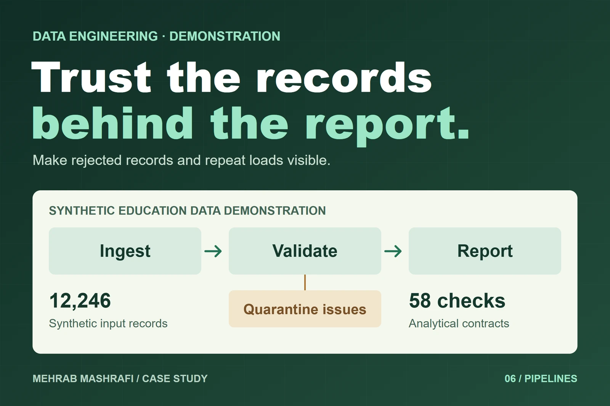

Data engineering · Synthetic data demonstration
Show which education records a dashboard can trust
A missing dashboard number can mean missing records, not poor programme performance. I built a synthetic education data pipeline that makes rejected records, repeat loads and output checks visible before anyone reads the dashboard.

- My role
- Pipeline designer and implementer
- Work
- Python, MongoDB, validation, analytical marts and Streamlit
- Project context
- Synthetic demonstration, fictional Tanzania education programme
01 / Situation
Show what happened to the records.
For this demonstration, I used a fictional education programme to represent late, incomplete and inconsistent reporting. The operational question was whether a manager could distinguish a programme result from a problem in the data feeding it.
I made the ingestion run itself visible. Accepted records, rejected records, updates and checks needed to be inspectable before the dashboard could be treated as complete.
02 / My work
Build the controls before the presentation.
I built the Python and MongoDB ingestion pipeline, validation path and analytical marts, then connected them to a Streamlit dashboard. The demonstration run processed 12,246 synthetic records across 14 entity types.
Invalid records went to quarantine with the issue and batch context. That preserved the reason for rejection instead of silently removing a row from the reporting sample.
I added output contracts to check the shape and integrity of the analytical marts. The 58 contract checks describe those outputs, not the success of the fictional programme.
Validation has two visible destinations
- 01
Synthetic batch
Hash records and identify changes - 02
Validation
Check the incoming records - 03A
Accepted records
Build and check analytical marts - 03B
Quarantined records
Keep the issue and batch context
03 / Decisions
A rerun should recognise work already done.
Record hashes distinguished unchanged records from updates and new inserts. That allowed the same batch to be loaded again without duplicating every source row.
The dashboard exposed run status, change counts, quality issues and contract results. An operator could inspect the run before relying on its charts, and see whether a change came from new information or a processing problem.
This separation was the central design choice: ingestion, validation and analytical reporting had different responsibilities, while keeping enough run context to trace their connection.
04 / Outcome
A demonstration people can inspect and rerun.
The completed build demonstrates repeat safe ingestion, a visible quarantine path and checked analytical outputs. It gives an operator a way to ask why a number changed before interpreting the number itself.
The Tanzania education programme and its records are fictional. This is an engineering demonstration, not an NGO deployment or a measured improvement in school or student outcomes.
For a live programme, the next work would be to agree the real source contracts, operational ownership and correction process with the people supplying and using the records.
Synthetic input
12,246
Records across 14 entity types.
Output contracts
58 checks
Shape and integrity checks on analytical marts.
Fictional programme data, not records collected from real schools or children.
Explore the implementation
Open the work
Can your team explain a missing number?
Start with a source batch, the checks it needs and who should resolve a rejected record.
Discuss data quality controls ↗ Email meProject experience by Mehrab Mashrafi. Updated .